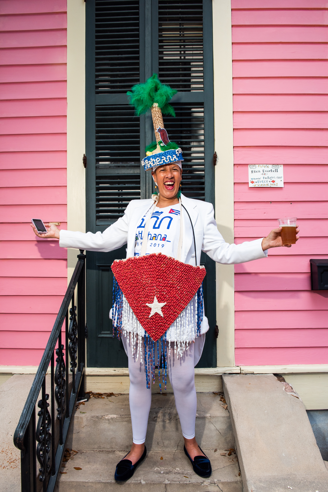
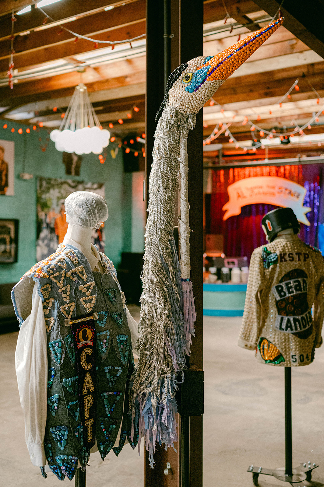

New Orleans, Louisiana
Working to mobilize our parade as a force for good — bringing people together in pursuit of Loving New Orleans.
Who We Are
We believe there are two powerful paths to a meaningful life: creating culture and being active in your community. Bringing folks together also builds a stronger safety net for our city.
We began as a small walking parade in 2008. During COVID, we became a true force for good — creating innovative efforts that supported thousands of New Orleanians, generating over a million dollars in jobs for musicians and culture bearers, and sparking joy throughout the city when the city needed it most. Who knew all that could happen from a bean parade?!?
After that experience, we wanted to create something long-term, something that would help us continue to "love" on New Orleans. In November 2021, we embarked on building a community space, Beanlandia. A vibrant cultural neighborhood anchor that invites us all to pursue a meaningful life together — through programming for children and adults, a stronger community safety net, and the enduring belief that New Orleans is a Team Sport.
See Our Programs
The Why
If you live in New Orleans, it's your responsibility to love it. That means building capacity for the people around you, showing up when it matters, and working together to make it better. We exist to build a network of folks who love New Orleans and are willing to do something about it.
We do this by gathering people together to share interests, create culture, and support one another. That process builds social cohesion — which can help create a stronger safety net.
Creating and celebrating cultural experiences at Beanlandia and around New Orleans
Workshops, history lectures, beaning sessions, and music classes happen at Beanlandia
Come enjoy building community through weekly events, dancing, crafting, gardening, and more
What We Do
Connecting people through culture, children's programming, and community service — building the safety net that helps us all. Making life a little better every day, and showing up when emergencies come our way.
Kids & Teens · Summer · Jobs · Climate
A resilience-themed summer camp for New Orleans kids, based on our work since Hurricane Ida. Bean Camp creates "first jobs" for teens to work as counselors and staff — building leadership, earning income, and carrying tradition forward. The camp also has zero financial barriers, expanding access to summer camp for kids in our community.
Cajun Music · French Language · Culture Preservation
French language was suppressed in South Louisiana for decades — La Louisiane is our effort to promote and preserve the unique culture of South Louisiana. We have worked with L'Union Française to add "French Tables," encouraging folks to practice their French. Then live music: Louisiana musicians performing songs in French, paying them while keeping the tradition alive. Dance lesson at 5. All are welcome. And Members get in free!
Climate · Sustainability · Neighborhood
Living in New Orleans means taking climate seriously — it's imperative. We plant trees, develop our on-site garden as a model of sustainability, and after Hurricane Ida we launched Get Lit Stay Lit — making Beanlandia a solar-powered resilience hub that stays on when the grid goes down. We've also installed a public water fountain and eliminated plastic cups from our events. As we continue to grow, we will continue to work to build sustainability and resilience for our community.
Relief · Families · Elders · Musicians
New Orleans will face more hurricanes, heat waves, and everyday hardship. When that happens, Beanlandia shows up as a resilience hub. Since 2020 — through COVID, hurricanes, and tornadoes — we've mobilized our membership and raised over $3.7 million in community support for families, elders, musicians, and neighbors who needed it most. We don't know when our next major hurricane will hit, but we know it's inevitable.
Beanlandia
Beanlandia isn't just the home of the Krewe of Red Beans — it's a gathering place for New Orleans culture in all its forms. We open our doors to other organizations, traditions, and communities who share our belief that culture is worth protecting and celebrating.
The Krewe of Mayahuel — a Mexican parade krewe rooted in Día de los Muertos tradition — calls Beanlandia home. Their annual parade is a testament to what New Orleans does best: welcoming, honoring, and celebrating the cultures that make this city unlike any other on earth. It's one of our most favorite things.
This is what New Orleans is a Team Sport looks like in practice.
Krewe of Mayahuel — Día de los Muertos Parade

3300 Royal Street
Have you visited a bean museum?
(It's not really about beans, but rather, a way to learn about modern New Orleans carnival culture.) Come journey with us into the "beaning of life."
Bean Tour Admission
Payment is collected at the door. Every dollar goes directly back into community programming — Bean Camp, La Louisiane, tree planting, and our safety net.
Google Reviews
"Wow. Mind blown. What an unexpected, serendipitous, delightful surprise."
Google Review"I fell in love immediately. The decor and the rich feeling of community run deep."
Google Review"What a truly pure and heartwarming experience. I love everything about this."
Google Review"This place rules. Incredibly welcoming ... Worth the visit."
Google Review"A beautiful insight into how New Orleans supports itself, its people and its culture while having a good time. Totally worth a visit."
Google Review"Very unique experience to learn about krewe traditions and to see some super creative costumes. A real slice of NOLA life."
Google ReviewWhat's Coming Up
From Cajun dance nights to krewe gatherings, there's always something happening in Beanlandia.
Louisiana French music, dancing, and good company. Doors at 6pm, music 6–8pm. French Table conversation before the set. All welcome.
📍 3300 Royal Street · FreeAn evening of storytelling and discussion — NOLA veterans share hard-won wisdom about making it through summer in the city. Free red beans & rice, drinks available. First drink on us. 7–9pm.
📍 3300 Royal Street · Free RSVP on Eventbrite →Louisiana French music, dancing, and good company. Doors at 6pm, music 6–8pm. French Table conversation before the set. All welcome.
📍 3300 Royal Street · FreeTwo weeks of resilience-themed summer camp for New Orleans kids, with teen counselors earning real income.
📍 Bywater, New Orleans Register now →Join Us
Participating in culture and community is one of the most meaningful things you can do with your time. Our goal is 2,000+ members — folks who are part of building and sustaining one of the most unique spaces in New Orleans, Beanlandia.
Membership is open to everyone. New Orleans locals, Louisiana neighbors, and friends of the city from anywhere in the world. Pay what you like — $5, $15, or more. Every member helps us grow our staff, fund our programs, work on resilience, build community, and keep the music playing.
$5/mo+
Suggested $15/month. Any amount gets you full membership.
$25/mo
Help us sustain Bean Camp, La Louisiane, and tree planting year-round.
$100/mo
Invest in making New Orleans an even better place!
Give Back
Choose a cause below — every dollar goes directly to the people and projects that keep this city's culture alive and its community strong.
A New Orleans legend who gave us joy for decades. Let's show up for him now.
One of the last great New Orleans bluesmen. Help us take care of our own.
The Bywater has one of the lowest canopy rates in the city. A few dollars a month transforms our neighborhood.
Testing found elevated lead in the soil at Markey Park playground. Help us remediate it so kids can play safely.